<link rel="import" href="../bower_components/polymer/polymer.html">
<link rel="import" href="../bower_components/polymer-bootstrap/polymer-bootstrap.html">
<link rel="import" href="../bower_components/iron-media-query/iron-media-query.html">
<!-- <link rel="import" href="../bower_components/iron-swipeable-pages/iron-swipeable-pages.html"> -->

<dom-module id="sameview-introduction0">
  <link rel="import" type="css" href="../css/animate.min.css">
  <link rel="import" type="css" href="../css/page.css">
  <link rel="import" type="css" href="../css/style.css">
  <template>
    <style include="polymer-bootstrap">
    a:focus,a:hover{
      text-decoration: none;
    }
    </style>
      <iron-media-query query="max-width: 768px" query-matches="{{_smallScreen}}"></iron-media-query>
    <app-route
        route="[[route]]"
        pattern="/:category"
        data="{{_routeData}}">
    </app-route>
    <div class="" fade-in$="[[!loading]]" hidden$="[[failure]]">
    <div class="int_content">
      <div class="quotebg">
        <template is="dom-if" if="![[_smallScreen]]">
          <div class="quoteImg" style="background-image:url(../images/introduction.jpg);"></div>
        </template>
      </div>
    <div class="container">
    <!-- <div class="breadcrumbs">
        <h1>快速上手 - Step 1: 下载、安装和部署</h1>
    </div> -->
    <div class="intContent">
      <div class="col-md-3">
        <nav class="sidebar">
          <a href="/introduction"><span></span>Step1：安装前准备</a>
          <a href="/introduction0" class="selected" style="font-weight:bold;color:#122A88;"><span style="border: 5px solid #122A88;"></span>Step2：Windows、Linux安装</a>
          <a href="/introduction1"><span></span>Step 3: 系统登录</a>
        </nav>
      </div>

      <div class="col-md-9">

        <div class="container col-md-12">


    <div class="panel panel-default">
        <div class="panel-heading">一、WINDOWS下安装3ren.zip （默认使用内嵌MYSQL数据库）</div>
        <div class="panel-body">
            <p>1. 把下载的<strong>3ren.zip</strong>安装包解压，如图：</p>
                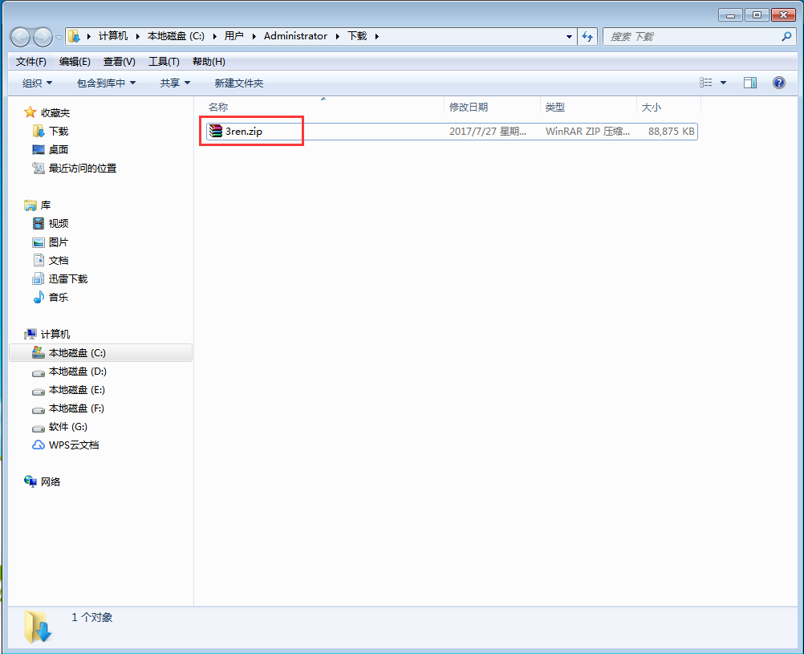
                <p>&nbsp;</p>
                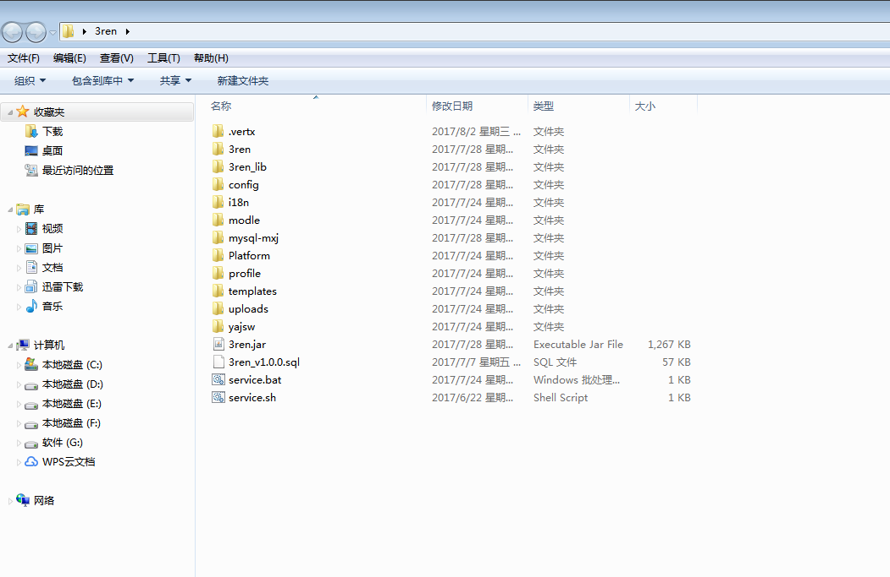
                <p>&nbsp;</p>
            <p>2. 打开<strong>CMD窗口</strong>，进入到<strong>3ren</strong>的安装目录下，运行<strong>service.bat install</strong>，待提示<strong>Service 3REN installed</strong>，表示守护进程安装成功，如下图所示：
              <span style="color:#DE4F4F;">（注意：只有第一次安装的时候需要执行service.bat install命令，以后运行软件跳过该步骤）</span></p>
                 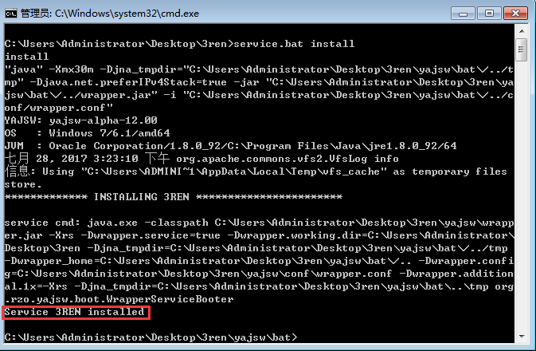
                 <p>&nbsp;</p>
            <p>3. 在<strong>3ren</strong>的安装目录下，运行<strong>service.bat start</strong>，待提示<strong>Service 3REN started</strong>，如图所示，表示守护进程服务已经开启</p>
                 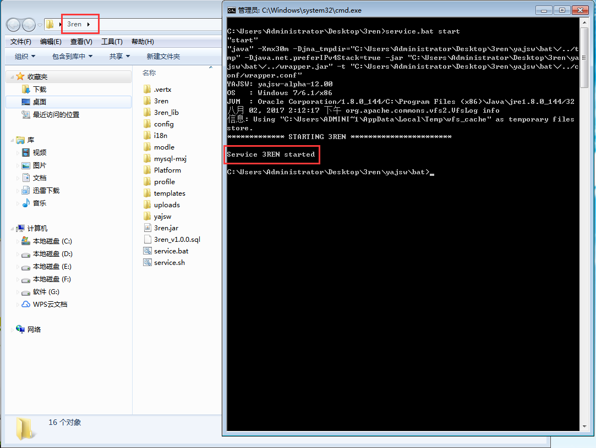
                 <p>&nbsp;</p>

            <p>4.登录软件：在浏览器地址栏输入<strong>http://localhost:8068</strong>或<strong>http://127.0.0.1:8068</strong>，显示<strong>3ren</strong>登陆界面（用户名：<strong>admin</strong>，密码：<strong>manage</strong>）</p>
                 
                 <p>&nbsp;</p>
             <br>
            <p>5.在任务管理器的服务中可以看见<strong>3REN</strong>的服务正在运行，如图所示，表示守护进程启动成功，可以关闭<strong>CMD</strong>命令窗口</p>
              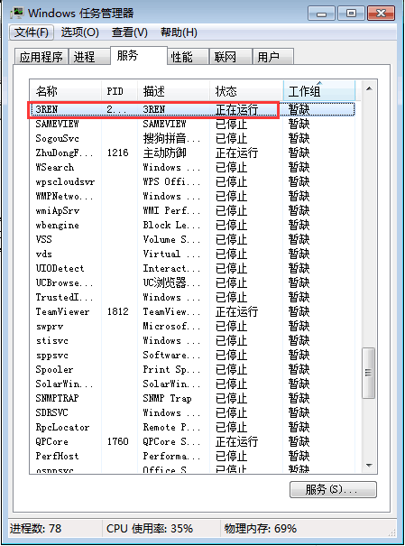
              <p>&nbsp;</p>
            <p>6.守护进程服务关闭功能，运行<strong>service.bat stop</strong>，待提示<strong>Service 3REN stopped</strong>之后，表示守护进程服务已关闭，如图所示：</p>
              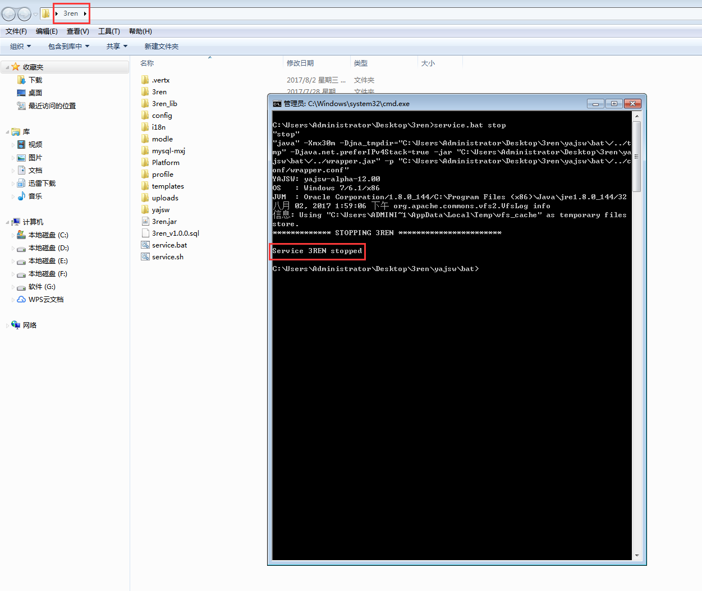
              <p>&nbsp;</p>
            <p>7.在任务管理器的服务中可以看见<strong>3REN</strong>的服务已停止，如图所示，表示守护进程关闭成功；</p>
              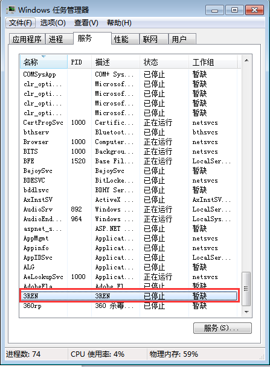
              <p>&nbsp;</p>
        </div>
    </div>
    <div class="panel panel-default">
        <div class="panel-heading">二、LINUX下安装3ren.zip （默认使用内嵌MYSQL数据库）</div>
        <div class="panel-body">
            <p>1.将下载下来的<strong>3ren.zip</strong>安装包解压，输入：<strong>unzip 3ren.zip</strong>，如图所示：</p>
                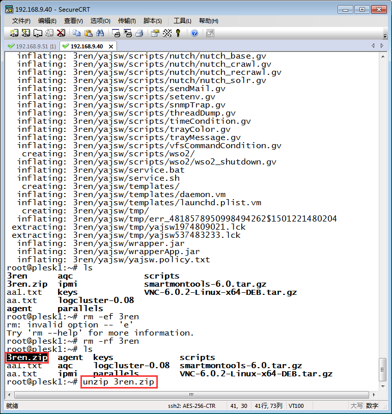
                <p>&nbsp;</p>
            <p>2.赋予<strong>start.sh</strong>可执行权限：</p>
                <p><strong>chmod -R 777 3ren</strong>，对文件夹<strong>3ren</strong>下所有文件赋予可执行权限，如图所示：</p>
                 
                 <p>&nbsp;</p>
            <p>3.在软件安装目录<strong>3ren</strong>下运行<strong>./service.sh install</strong>，待提示<strong>Service 3REN installed</strong>，表示守护进程服务安装成功，如图所示：
              <span style="color:#DE4F4F;">（注意：只有第一次安装的时候需要执行service.sh install命令，以后运行软件跳过该步骤）</span></p>
                 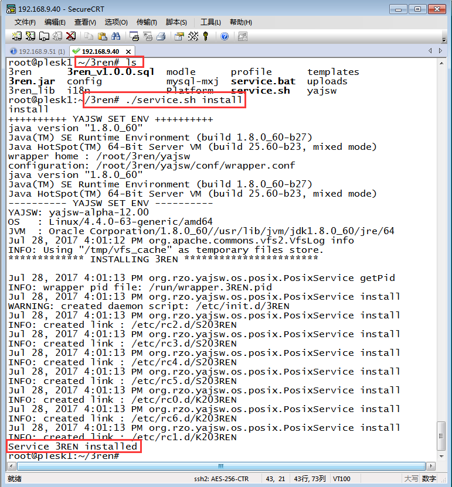
                 <p>&nbsp;</p>

            <p>4.在软件安装目录<strong>3ren</strong>下运行<strong>./service.sh start</strong>，待提示<strong>Service 3REN started</strong>，表示守护进程服务开启成功，如图所示</p>
                 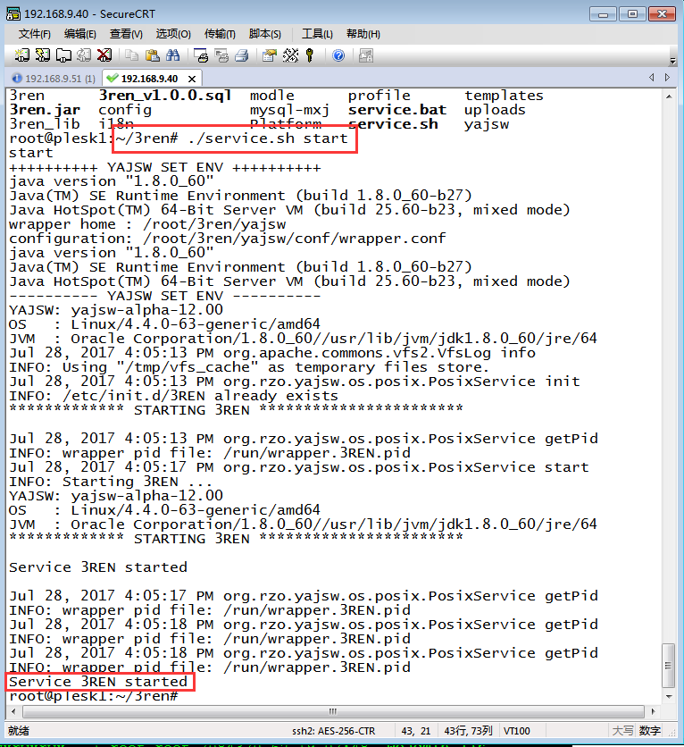
                 <p>&nbsp;</p>
             <br>
            <p>5.登录软件：在浏览器地址栏输入<strong>http://localhost:8068</strong>或<strong>http://127.0.0.1:8068</strong>，显示<strong>3ren</strong>登陆界面（用户名：<strong>admin</strong>，密码：<strong>manage</strong>）</p>
              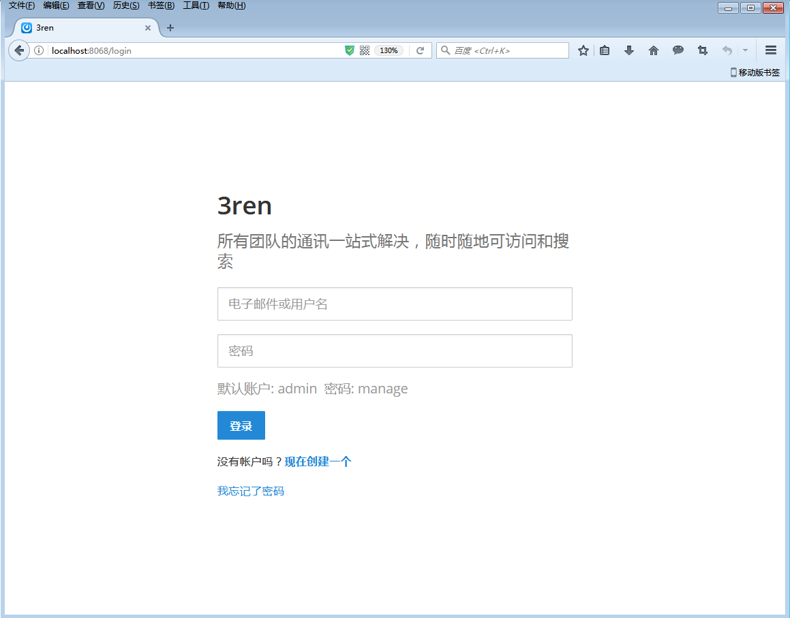
              <p>&nbsp;</p>
            <p>6.运行<strong>ps –ef|grep 3ren</strong>，可以查看得到有两个<strong>java.exe</strong>进程，如图所示：</p>
              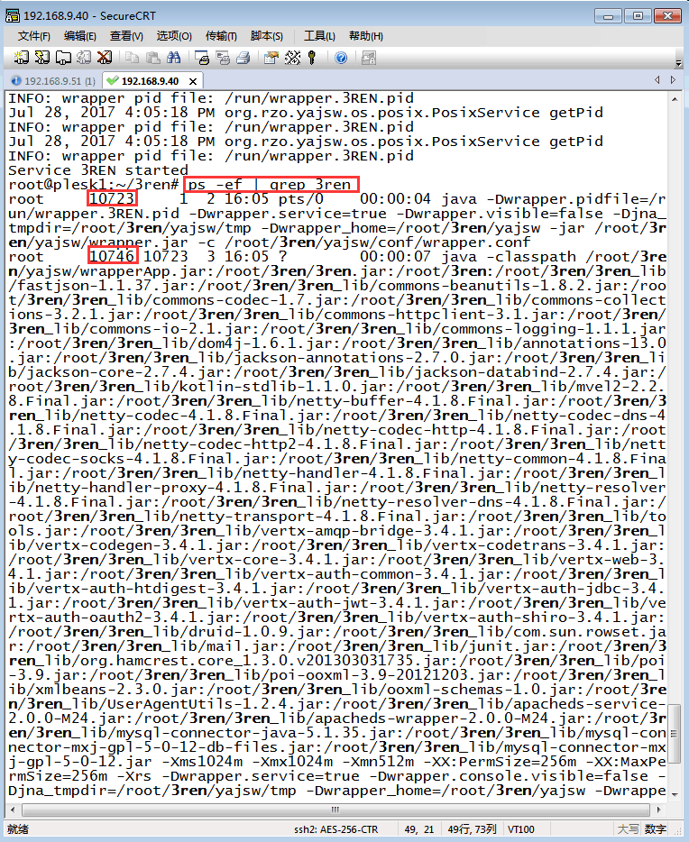
              <p>&nbsp;</p>
            <p>7.守护进程服务关闭功能，运行<strong>service.bat stop</strong>，待提示<strong>Service 3REN stopped</strong>之后，表示守护进程服务已关闭，如图所示：</p>
              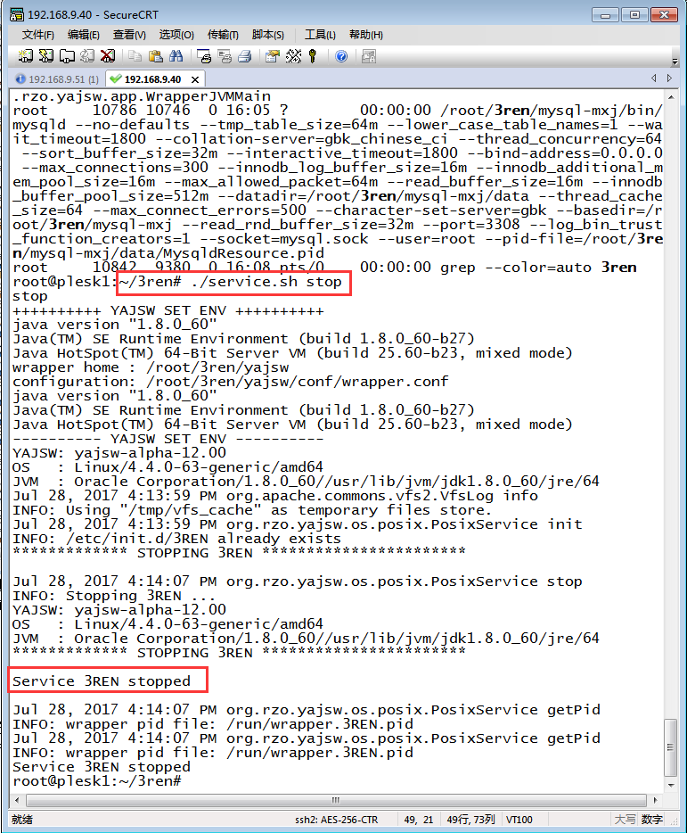
              <p>&nbsp;</p>
        </div>
    </div>


      </div>
    </div>
    </div>
    </div>
    </div>

  </div>
</template>
<script>
  Polymer({
    is: 'sameview-introduction0',
     ready: function(){
       var win = $(window);
       $(window).resize(function(){
         this.winwidth = win.width();//屏幕的宽  .width()
         this.winheight = win.innerHeight()-1;//屏幕的高
         var bgHeight = this.winheight;
        //  $(this.$.bg).height(bgHeight);
       });
       this.winheight = win.innerHeight()-1;//屏幕的高
       this.winwidth = win.width();//屏幕的宽  .width()
       var bgHeight = this.winheight;
      //  $(this.$.bg).height(bgHeight);
     },


  });

</script>

</dom-module>
